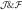
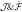

Corrupt the memory anchor
Remove target identity at its source.
AUV
1 Fudan University2 Shanghai University of Finance and Economics
✉ Corresponding authors
Strong, sustained, and prompt-agnostic attacks for real-world videos.
Modern video object segmentation (VOS) relies on a two-stage inference paradigm: target initialization and memory-based propagation. However, existing adversarial attacks on VOS often overlook this structure. We therefore propose AUV, an adversarial framework that optimizes a universal adversarial perturbation (UAP) through decoupled strategies aligned with both stages. By disrupting the shared memory space, it enables prompt-agnostic attacks across masks, points, boxes, and language.
AUV achieves new SOTA attack performance across VOS benchmarks and prompt types, demonstrating the fastest and longest-lasting suppression, with the framework adaptable to different VOS models.
Remove target identity at its source.
Disrupt target association over time.
Results with mask prompt. See the paper for full comparisons.
| Benchmark | Metric ↓ | SAM3 | SAM2.1-B+ | ||
|---|---|---|---|---|---|
| Clean | Attacked | Clean | Attacked | ||
| DAVIS17 |  | 92.2 | 8.4 | 89.0 | 12.1 |
| YTVOS19 | 89.7 | 14.0 | 88.0 | 19.2 | |
| MOSEv2 |  | 60.3 | 24.6 | 46.0 | 26.5 |
| MOSEv1 | 78.4 | 21.1 | 73.6 | 23.2 | |
SAM3 · Mask prompt · VOS benchmarks
CleanAUV
Measures how fast the attack takes effect.
Low Lat → faster onset.
Measures how long the attack persists.
High Cov → sustained suppression.
Measures mid-video attack persistence starting from frame k.
High Covk → sustained mid-video suppression.
| Method | DAVIS17 | YTVOS19 | ||||
|---|---|---|---|---|---|---|
| Lat↓ | Cov↑ | Cov20↑ | Lat↓ | Cov↑ | Cov20↑ | |
| UAP-SAM2 | 52.5 | 35.9 | 43.6 | 50.9 | 41.1 | 47.4 |
| AUV | 5.5 | 89.2 | 88.1 | 8.6 | 85.1 | 84.6 |
@misc{shen2026auv,
title={Attack-Inference Aligned Universal Adversarial Attacks on Video Object Segmentation},
author={Shen, Ruiqi and Liu, Chang and Ding, Henghui},
year={2026},
url={https://github.com/FudanCVL/AUV}
}